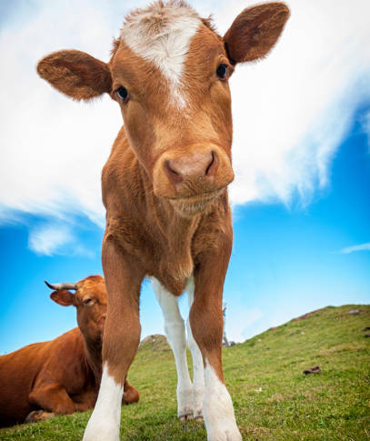

Algemene informatie over koeien

Koeien zijn grote herbivore zoogdieren die wereldwijd voorkomen en tot de runderfamilie behoren. Hier is wat basisinformatie over koeien:
Fysieke kenmerken: Koeien zijn meestal groot en zwaar, met volwassen koeien die variëren in grootte en gewicht, afhankelijk van het ras. Ze hebben een typische lichaamsbouw met vier poten, een lange staart en hoorns (sommige rassen hebben hoorns, terwijl andere expres geen hoorns hebben vanwege de veiligheid). De kleur van hun vacht varieert en is afhankelijk van het ras, met kleuren als zwart, bruin, wit en gevlekt.
Gedrag: Koeien zijn over het algemeen rustige en sociale dieren. Ze vormen vaak kuddes en hebben een hiërarchie binnen de groep. Ze grazen meestal in weilanden en hebben een specifieke spijsvertering om cellulose (aanwezig in gras) af te breken.
Voeding: Koeien zijn herbivoren en voeden zich voornamelijk met gras, maar ze kunnen ook ander plantaardig materiaal eten, zoals hooi, kuilvoer en maïs. De spijsvertering van koeien omvat een complex vierkamermagenstelsel, waaronder de pens, de netmaag, de boekmaag en de lebmaag, waarmee ze vezelrijke planten kunnen verteren.
Voortplanting: Vrouwelijke koeien worden vaarzen genoemd voordat ze kalven. Na het kalveren worden ze gewoonlijk koeien genoemd. De draagtijd van een koe is ongeveer negen maanden en na die negen maanden wordt er een kalf geboren.
Gebruik: Koeien worden wereldwijd gefokt voor verschillende doeleinden, zoals vleesproductie, zuivelproductie (melk), en soms als werk- of trekdieren. Melkkoeien worden specifiek gefokt voor melkproductie, terwijl vleeskoeien worden gefokt voor vlees.
Rassen: Er zijn talloze koeienrassen, zoals de Jersey, Hereford, Angus, Simmental en vele anderen, elk met unieke kenmerken en geschiktheid voor specifieke doeleinden.
Belang voor de landbouw: Koeien spelen een belangrijke rol in de landbouw en de voedselproductie door vlees en zuivelproducten te leveren.
Levensverwachting: De levensverwachting van een koe varieert, maar veel koeien kunnen tot vijftien jaar oud worden. Dit hangt wel van verschillende factoren af, zoals gezondheidszorg.
Zorg en gezondheid: Koeien hebben aandacht nodig voor hun gezondheid en welzijn. Ze moeten worden gevaccineerd en regelmatig gecontroleerd door een dierenarts. Voeding, leefomgeving en kwaliteit van zorg die ze krijgen, hebben invloed op de productiviteit en gezondheid van koeien.